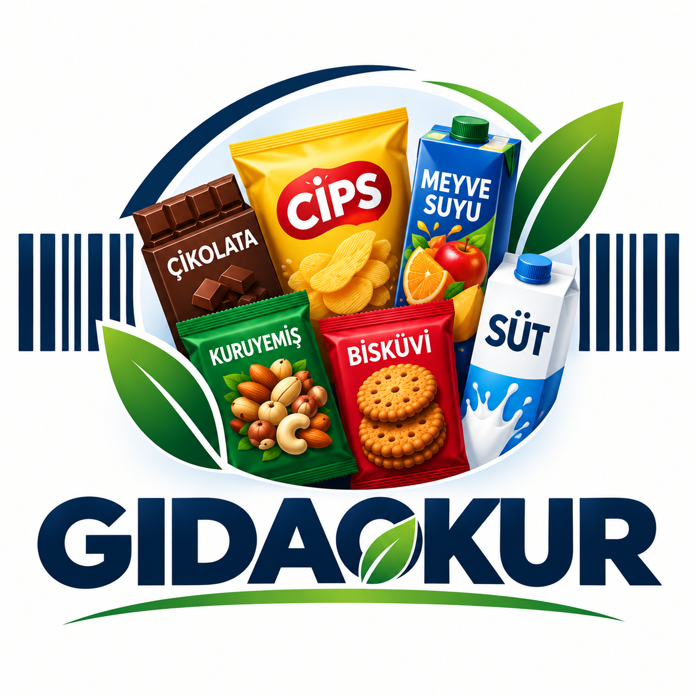

Ürünü bul
Barkod, ürün adı veya ürün ambalajı fotoğrafıyla ara. Fotoğrafta önce barkod, sonra yazı okunmaya çalışılır.

BİLİNÇLİ SEÇİMİNGIDA OKURYAZARLIĞI, YENİ BİR ALIŞKANLIK
Paketin ön yüzü değil, içindekiler konuşsun. Ürünün barkodunu ara; alerjenleri ve besin bilgilerini tek yerde, anlaşılır biçimde gör.
Barkod ya da ürün adıyla ara.
İçerik ve besin bilgisini incele.
Alerjen tercihlerini kaydet.
GIDAOKUR / KULLANIM
Ürün verisini anlaşılır parçalara ayırırız. Son kararı sen verirsin; her uyarının yanında nedenini de gösteririz.
Barkod, ürün adı veya ürün ambalajı fotoğrafıyla ara. Fotoğrafta önce barkod, sonra yazı okunmaya çalışılır.
Besin değerleri, içerik listesi ve alerjen bilgileri ayrı alanlarda görünür. Kaynağın paylaşmadığı bilgi “Veri yok” olarak kalır.
Alerjen tercihlerini kaydet. Bir ifade eşleşirse koyu kırmızı uyarı görürsün; eşleşme çıkmaması güvenli olduğu anlamına gelmez.
Kırmızı yüksek eşik, sarı orta eşik, yeşil düşük eşik anlamına gelir. Göstergeler 100 g veya 100 ml verisidir.
ETİKET MERCEĞİ / 01
Barkodu yaz, ambalaj fotoğrafı seç veya ürün adını ara. Fotoğrafta önce barkod, sonra ambalaj yazısı okunmaya çalışılır.
Barkod veya ambalaj yazısı taranır.
Fotoğrafı seçtikten sonra “Taramayı başlat” düğmesine bas. Barkod okunamazsa ambalaj yazısı denenir.
Fotoğraf gizliliği: Görsel tarayıcıda işlenir, sunucuya yüklenmez. Okunan barkod ya da ambalaj yazısından çıkarılan arama ifadesi Open Food Facts'te sorgulanır. OCR tahmini yanlış olabilir.
KENDİNE GÖRE BİLGİ
Hesap açıp alerjen tercihlerini kaydedebilirsin. Ürün verisindeki olası eşleşmeleri görünür kılalım; yine de paket etiketini mutlaka kontrol et.
Alerjenlerini hesabına kaydetmek için giriş yap.
20 farklı, doğrulanmış barkod taramasıyla 40 TL değerinde demo kuponu oluşturulabilir.
Bu proje demosundaki kod gerçek bir mağazada geçerli değildir. Gerçek indirim için iş yeri/marka anlaşması gerekir.
KÜÇÜK BİR ETİKET REHBERİ
NOT DEFTERİ / 03GIDAOKUR karar vermez; bilgiyi düzenler. Son sözü ürünün gerçek ambalajı ve senin ihtiyaçların söyler.
İçindekiler çoğunlukla miktarı en yüksek olandan başlayarak listelenir.
Porsiyon miktarı ürünler arasında değişebilir. Aynı ölçü birimiyle karşılaştırmak daha anlamlıdır.
Veri tabanında içerik ya da alerjen bilgisi yoksa sonuç “belirsiz” görünür; güvenli olduğu varsayılmaz.
Bu proje bir sağlık tanısı veya kişiye özel diyet önerisi vermez. Ürün bilgileri Open Food Facts topluluk veri tabanından sağlanır; ürün verisi eksik veya güncel olmayabilir. Alerjide ambalajı kontrol et ve şüphede sağlık uzmanına danış.